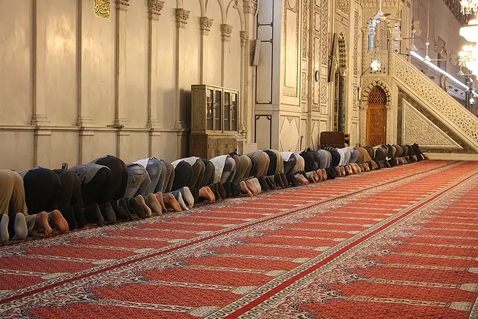

Chapter 15: Religion¶
Introduction¶
Why do sociologists study religion? For centuries, humankind has sought to understand and explain the “meaning of life.” Many philosophers believe this contemplation and the desire to understand our place in the universe are what differentiate humankind from other species. Religion, in one form or another, has been found in all human societies since human societies first appeared. Archaeological digs have revealed ritual objects, ceremonial burial sites, and other religious artifacts. Social conflict and even wars often result from religious disputes. To understand a culture, sociologists must study its religion.
What is religion? Pioneer sociologist Émile Durkheim described it with the ethereal statement that it consists of “things that surpass the limits of our knowledge” (1915). He went on to elaborate: Religion is “a unified system of beliefs and practices relative to sacred things, that is to say set apart and forbidden, beliefs and practices which unite into one single moral community, called a church, all those who adhere to them” (1915). Some people associate religion with places of worship (a synagogue or church), others with a practice (confession or meditation), and still others with a concept that guides their daily lives (like dharma or sin). All these people can agree that religion is a system of beliefs, values, and practices concerning what a person holds sacred or considers to be spiritually significant.
Does religion bring fear, wonder, relief, explanation of the unknown or control over freedom and choice? How do our religious perspectives affect our behavior? These are questions sociologists ask and are reasons they study religion. What are peoples' conceptions of the profane and the sacred? How do religious ideas affect the real-world reactions and choices of people in a society?
Religion can also serve as a filter for examining other issues in society and other components of a culture. For example, after the terrorist attacks of September 11, 2001, and later in during the rise and predominant of the terrorist group ISIS, it became important for teachers, church leaders, and the media to educate Americans about Islam to prevent stereotyping and to promote religious tolerance. Sociological tools and methods, such as surveys, polls, interviews, and analysis of historical data, can be applied to the study of religion in a culture to help us better understand the role religion plays in people’s lives and the way it influences society.
15.1 The Sociological Approach to Religion¶
Learning Objectives
By the end of this section, you should be able to:
- Discuss the historical view of religion from a sociological perspective
- Describe how the major sociological paradigms view religion

From the Latin religio (respect for what is sacred) and religare (to bind, in the sense of an obligation), the term religion describes various systems of belief and practice that define what people consider to be sacred or spiritual (Fasching and deChant 2001; Durkheim 1915). Throughout history, and in societies across the world, leaders have used religious narratives, symbols, and traditions in an attempt to give more meaning to life and understand the universe. Some form of religion is found in every known culture, and it is usually practiced in a public way by a group. The practice of religion can include feasts and festivals, intercession with God or gods, marriage and funeral services, music and art, meditation or initiation, sacrifice or service, and other aspects of culture.
While some people think of religion as something individual because religious beliefs can be highly personal, religion is also a social institution. Social scientists recognize that religion exists as an organized and integrated set of beliefs, behaviors, and norms centered on basic social needs and values. Moreover, religion is a cultural universal found in all social groups. For instance, in every culture, funeral rites are practiced in some way, although these customs vary between cultures and within religious affiliations. Despite differences, there are common elements in a ceremony marking a person’s death, such as announcement of the death, care of the deceased, disposition, and ceremony or ritual. These universals, and the differences in the way societies and individuals experience religion, provide rich material for sociological study.
In studying religion, sociologists distinguish between what they term the experience, beliefs, and rituals of a religion. Religious experience refers to the conviction or sensation that we are connected to “the divine.” This type of communion might be experienced when people pray or meditate. Religious beliefs are specific ideas members of a particular faith hold to be true, such as that Jesus Christ was the son of God, or that reincarnation exists. Another illustration of religious beliefs is the creation stories we find in different religions. Religious rituals are behaviors or practices that are either required or expected of the members of a particular group, such as bar mitzvah or confession of sins (Barkan and Greenwood 2003).
The History of Religion as a Sociological Concept¶
In the wake of nineteenth century European industrialization and secularization, three social theorists attempted to examine the relationship between religion and society: Émile Durkheim, Max Weber, and Karl Marx. They are among the founding thinkers of modern sociology.
As stated earlier, French sociologist Émile Durkheim (1858–1917) defined religion as a “unified system of beliefs and practices relative to sacred things” (1915). To him, sacred meant extraordinary—something that inspired wonder and that seemed connected to the concept of “the divine.” Durkheim argued that “religion happens” in society when there is a separation between the profane (ordinary life) and the sacred (1915). A rock, for example, isn’t sacred or profane as it exists. But if someone makes it into a headstone, or another person uses it for landscaping, it takes on different meanings—one sacred, one profane.
Durkheim is generally considered the first sociologist who analyzed religion in terms of its societal impact. Above all, he believed religion is about community: It binds people together (social cohesion), promotes behavior consistency (social control), and offers strength during life’s transitions and tragedies (meaning and purpose). By applying the methods of natural science to the study of society, Durkheim held that the source of religion and morality is the collective mind-set of society and that the cohesive bonds of social order result from common values in a society. He contended that these values need to be maintained to maintain social stability.
But what would happen if religion were to decline? This question led Durkheim to posit that religion is not just a social creation but something that represents the power of society: When people celebrate sacred things, they celebrate the power of their society. By this reasoning, even if traditional religion disappeared, society wouldn’t necessarily dissolve.
Whereas Durkheim saw religion as a source of social stability, German sociologist and political economist Max Weber (1864–1920) believed it was a precipitator of social change. He examined the effects of religion on economic activities and noticed that heavily Protestant societies—such as those in the Netherlands, England, Scotland, and Germany—were the most highly developed capitalist societies and that their most successful business leaders were Protestant. In his writing The Protestant Ethic and the Spirit of Capitalism (1905), he contends that the Protestant work ethic influenced the development of capitalism. Weber noted that certain kinds of Protestantism supported the pursuit of material gain by motivating believers to work hard, be successful, and not spend their profits on frivolous things. (The modern use of “work ethic” comes directly from Weber’s Protestant ethic, although it has now lost its religious connotations.)
Big Picture: The Protestant Work Ethic in the Information Age
Max Weber (1904) posited that, in Europe in his time, Protestants were more likely than Catholics to value capitalist ideology, and believed in hard work and savings. He showed that Protestant values directly influenced the rise of capitalism and helped create the modern world order. Weber thought the emphasis on community in Catholicism versus the emphasis on individual achievement in Protestantism made a difference. His century-old claim that the Protestant work ethic led to the development of capitalism has been one of the most important and controversial topics in the sociology of religion. Today, scholars continue to debate the applicability of his contention to modern society (Greeley 1989).
What does the concept of work ethic mean today? The work ethic in the information age has been affected by tremendous cultural and social change, just as workers in the mid- to late nineteenth century were influenced by the wake of the Industrial Revolution. Factory jobs tend to be simple, uninvolved, and require very little thinking or decision making on the part of the worker. Today, the work ethic of the modern workforce has been transformed, as more thinking and decision making is required. Employees also seek autonomy and fulfillment in their jobs, not just wages. Higher levels of education have become necessary, as well as people management skills and access to the most recent information on any given topic. The information age has increased the rapid pace of production expected in many jobs.
On the other hand, the “McDonaldization” of the United States (Hightower 1975; Ritzer 1993), in which many service industries, such as the fast-food industry, have established routinized roles and tasks, has resulted in a “discouragement” of the work ethic. In jobs where roles and tasks are highly prescribed, workers have no opportunity to make decisions. They are considered replaceable commodities as opposed to valued employees. During times of recession, these service jobs may be the only employment possible for younger individuals or those with low-level skills. The pay, working conditions, and robotic nature of the tasks dehumanizes the workers and strips them of incentives for doing quality work.
Working hard also doesn’t seem to have any relationship with Catholic or Protestant religious beliefs anymore, or those of other religions; information age workers expect talent and hard work to be rewarded by material gain and career advancement.
German philosopher, journalist, and revolutionary socialist Karl Marx (1818–1883) also studied the social impact of religion. He believed religion reflects the social stratification of society and that it maintains inequality and perpetuates the status quo. For him, religion was just an extension of working-class (proletariat) economic suffering. He famously argued that religion “is the opium of the people” (1844).
For Durkheim, Weber, and Marx, who were reacting to the great social and economic upheaval of the late nineteenth century and early twentieth century in Europe, religion was an integral part of society. For Durkheim, religion was a force for cohesion that helped bind the members of society to the group, while Weber believed religion could be understood as something separate from society. Marx considered religion inseparable from the economy and the worker. Religion could not be understood apart from the capitalist society that perpetuated inequality. Despite their different views, these social theorists all believed in the centrality of religion to society.
Theoretical Perspectives on Religion¶
Modern-day sociologists often apply one of three major theoretical perspectives. These views offer different lenses through which to study and understand society: functionalism, symbolic interactionism, and conflict theory. Let’s explore how scholars applying these paradigms understand religion.
Functionalism¶
Functionalists contend that religion serves several functions in society. Religion, in fact, depends on society for its existence, value, and significance, and vice versa. From this perspective, religion serves several purposes, like providing answers to spiritual mysteries, offering emotional comfort, and creating a place for social interaction and social control.
In providing answers, religion defines the spiritual world and spiritual forces, including divine beings. For example, it helps answer questions like, “How was the world created?” “Why do we suffer?” “Is there a plan for our lives?” and “Is there an afterlife?” As another function, religion provides emotional comfort in times of crisis. Religious rituals bring order, comfort, and organization through shared familiar symbols and patterns of behavior.
One of the most important functions of religion, from a functionalist perspective, is the opportunities it creates for social interaction and the formation of groups. It provides social support and social networking and offers a place to meet others who hold similar values and a place to seek help (spiritual and material) in times of need. Moreover, it can foster group cohesion and integration. Because religion can be central to many people’s concept of themselves, sometimes there is an “in-group” versus “out-group” feeling toward other religions in our society or within a particular practice. On an extreme level, the Inquisition, the Salem witch trials, and anti-Semitism are all examples of this dynamic. Finally, religion promotes social control: It reinforces social norms such as appropriate styles of dress, following the law, and regulating sexual behavior.
Conflict Theory¶
Conflict theorists view religion as an institution that helps maintain patterns of social inequality. For example, the Vatican has a tremendous amount of wealth, while the average income of Catholic parishioners is small. According to this perspective, religion has been used to support the “divine right” of oppressive monarchs and to justify unequal social structures, like India’s caste system.
Conflict theorists are critical of the way many religions promote the idea that believers should be satisfied with existing circumstances because they are divinely ordained. This power dynamic has been used by Christian institutions for centuries to keep poor people poor and to teach them that they shouldn’t be concerned with what they lack because their “true” reward (from a religious perspective) will come after death. Conflict theorists also point out that those in power in a religion are often able to dictate practices, rituals, and beliefs through their interpretation of religious texts or via proclaimed direct communication from the divine.
The feminist perspective is a conflict theory view that focuses specifically on gender inequality. In terms of religion, feminist theorists assert that, although women are typically the ones to socialize children into a religion, they have traditionally held very few positions of power within religions. A few religions and religious denominations are more gender equal, but male dominance remains the norm of most.
Sociology in the Real World: Rational Choice Theory: Can Economic Theory Be Applied to Religion?
How do people decide which religion to follow, if any? How does one pick a church or decide which denomination “fits” best? Rational choice theory (RCT) is one way social scientists have attempted to explain these behaviors. The theory proposes that people are self-interested, though not necessarily selfish, and that people make rational choices—choices that can reasonably be expected to maximize positive outcomes while minimizing negative outcomes. Sociologists Roger Finke and Rodney Stark (1988) first considered the use of RCT to explain some aspects of religious behavior, with the assumption that there is a basic human need for religion in terms of providing belief in a supernatural being, a sense of meaning in life, and belief in life after death. Religious explanations of these concepts are presumed to be more satisfactory than scientific explanations, which may help to account for the continuation of strong religious connectedness in countries such as the United States, despite predictions of some competing theories for a great decline in religious affiliation due to modernization and religious pluralism.
Another assumption of RCT is that religious organizations can be viewed in terms of “costs” and “rewards.” Costs are not only monetary requirements, but are also the time, effort, and commitment demands of any particular religious organization. Rewards are the intangible benefits in terms of belief and satisfactory explanations about life, death, and the supernatural, as well as social rewards from membership. RCT proposes that, in a pluralistic society with many religious options, religious organizations will compete for members, and people will choose between different churches or denominations in much the same way they select other consumer goods, balancing costs and rewards in a rational manner. In this framework, RCT also explains the development and decline of churches, denominations, sects, and even cults; this limited part of the very complex RCT theory is the only aspect well supported by research data.
Critics of RCT argue that it doesn’t fit well with human spiritual needs, and many sociologists disagree that the costs and rewards of religion can even be meaningfully measured or that individuals use a rational balancing process regarding religious affiliation. The theory doesn’t address many aspects of religion that individuals may consider essential (such as faith) and further fails to account for agnostics and atheists who don’t seem to have a similar need for religious explanations. Critics also believe this theory overuses economic terminology and structure and point out that terms such as “rational” and “reward” are unacceptably defined by their use; they would argue that the theory is based on faulty logic and lacks external, empirical support. A scientific explanation for why something occurs can’t reasonably be supported by the fact that it does occur. RCT is widely used in economics and to a lesser extent in criminal justice, but the application of RCT in explaining the religious beliefs and behaviors of people and societies is still being debated in sociology today.
Symbolic Interactionism¶
Rising from the concept that our world is socially constructed, symbolic interactionism studies the symbols and interactions of everyday life. To interactionists, beliefs and experiences are not sacred unless individuals in a society regard them as sacred. The Star of David in Judaism, the cross in Christianity, and the crescent and star in Islam are examples of sacred symbols. Interactionists are interested in what these symbols communicate. Because interactionists study one-on-one, everyday interactions between individuals, a scholar using this approach might ask questions focused on this dynamic. The interaction between religious leaders and practitioners, the role of religion in the ordinary components of everyday life, and the ways people express religious values in social interactions—all might be topics of study to an interactionist.
15.2 World Religions¶
Learning Objectives
By the end of this section, you should be able to:
- Explain the differences between various types of religious organizations
- Classify religion, like animism, polytheism, monotheism, and atheism
- Describe several major world religions
The major religions of the world (Hinduism, Buddhism, Islam, Christianity, Taoism, and Judaism) differ in many respects, including how each religion is organized and the belief system each upholds. Other differences include the nature of belief in a higher power, the history of how the world and the religion began, and the use of sacred texts and objects.
Types of Religious Organizations¶
Religions organize themselves—their institutions, practitioners, and structures—in a variety of fashions. For instance, when the Roman Catholic Church emerged, it borrowed many of its organizational principles from the ancient Roman military and turned senators into cardinals, for example. Sociologists use different terms, like ecclesia, denomination, and sect, to define these types of organizations. Scholars are also aware that these definitions are not static. Most religions transition through different organizational phases. For example, Christianity began as a cult, transformed into a sect, and today exists as an ecclesia.
Cults are new religious movements and are often characterized as small, secretive, and highly controlling of members and may have a charismatic leader. In the United States today this term often carries pejorative connotations. However, almost all religions began as cults and gradually progressed to levels of greater size and organization. The term cult is sometimes used interchangeably with the term new religious movement (NRM). The new term may be an attempt to lessen the negativity that the term ‘cult’ has amassed.
Controversy exists over whether some groups are cults, perhaps due in part to media sensationalism over groups like polygamous Mormons or the Peoples Temple followers who died at Jonestown, Guyana. Some groups that are controversially labeled as cults today include the Church of Scientology and the Hare Krishna movement.
A sect is an offshoot of a larger religious group that has distinct beliefs and practices that deviate from that group. Most of the well-known Christian denominations in the United States today began as sects. For example, the Methodists and Baptists protested against their parent Anglican Church in England, just as Henry VIII protested against the Catholic Church by forming the Anglican Church. From “protest” comes the term Protestant.
Occasionally, a sect is a breakaway group that may be in tension with larger society. They sometimes claim to be returning to “the fundamentals” or to contest the veracity of a particular doctrine. When membership in a sect increases over time, it may grow into a denomination. Often a sect begins as an offshoot of a denomination, when a group of members believes they should separate from the larger group.
Some sects do not grow into denominations. Sociologists call these established sects. Established sects, such as the Amish or Jehovah’s Witnesses fall halfway between sect and denomination on the ecclesia–cult continuum because they have a mixture of sect-like and denomination-like characteristics.
A denomination is a large, mainstream religious organization, but it does not claim to be official or state sponsored. It is one religion among many. For example, Baptist, African Methodist Episcopal, Catholic, and Seventh-day Adventist are all Christian denominations.
The term ecclesia, originally referring to a political assembly of citizens in ancient Athens, Greece, now refers to a congregation. In sociology, the term is used to refer to a religious group that most all members of a society belong to. It is considered a nationally recognized, or official, religion that holds a religious monopoly and is closely allied with state and secular powers. The United States does not have an ecclesia by this standard; in fact, this is the type of religious organization that many of the first colonists came to America to escape.
There are many countries in Europe, Asia, Central and South America, and Africa that are considered to have an official state-church. Most of their citizens share similar beliefs, and the state-church has significant involvement in national institutions, which includes restricting the behavior of those with different belief systems. The state-church of England is the Church of England or the Anglican Church established in the 16th century by King Henry VIII. In Saudi Arabia, Islamic law is enforced, and public display of any other religion is illegal. Using this definition then, it can be said that the major Abrahamic systems of Christianity, Judaism, and Islam, are ecclesia; in some regions, they are considered a state-church.
One way to remember these religious organizational terms is to think of cults, sects, denominations, and ecclesia representing a continuum, with increasing influence on society, where cults are least influential and ecclesia are most influential.
Types of Religions¶
Scholars from a variety of disciplines have strived to classify religions. One widely accepted categorization that helps people understand different belief systems considers what or who people worship (if anything). Using this method of classification, religions might fall into one of these basic categories, as shown in Table 15.1.
Table 15.1 One way scholars have categorized religions is by classifying what or who they hold to be divine.
| Religious Classification | What/Who Is Divine | Example |
|---|---|---|
| Polytheism | Multiple gods | Belief systems of the ancient Greeks and Romans |
| Monotheism | Single god | Judaism, Islam |
| Atheism | No deities | Atheism |
| Animism | Nonhuman beings (animals, plants, natural world) | Indigenous nature worship (Shinto) |
| Totemism | Human-natural being connection | Ojibwa (Native American) beliefs |
Note that some religions may be practiced—or understood—in various categories. For instance, the Christian notion of the Holy Trinity (God, Jesus, Holy Spirit) defies the definition of monotheism, which is a religion based on belief in a single deity, to some scholars. Similarly, many Westerners view the multiple manifestations of Hinduism’s godhead as polytheistic, which is a religion based on belief in multiple deities,, while Hindus might describe those manifestations are a monotheistic parallel to the Christian Trinity. Some Japanese practice Shinto, which follows animism, which is a religion that believes in the divinity of nonhuman beings, like animals, plants, and objects of the natural world, while people who practice totemism believe in a divine connection between humans and other natural beings.
It is also important to note that every society also has nonbelievers, such as atheists, who do not believe in a divine being or entity, and agnostics, who hold that ultimate reality (such as God) is unknowable. While typically not an organized group, atheists and agnostics represent a significant portion of the population. It is important to recognize that being a nonbeliever in a divine entity does not mean the individual subscribes to no morality. Indeed, many Nobel Peace Prize winners and other great humanitarians over the centuries would have classified themselves as atheists or agnostics.
The World’s Religions and Philosophies¶
Religions have emerged and developed across the world. Some have been short-lived, while others have persisted and grown. In this section, we will explore seven of the world’s major religions.
Hinduism¶
The oldest religion in the world, Hinduism originated in the Indus River Valley about 4,500 years ago in what is now modern-day northwest India and Pakistan. It arose contemporaneously with ancient Egyptian and Mesopotamian cultures. With roughly one billion followers, Hinduism is the third-largest of the world’s religions. Hindus believe in a divine power that can manifest as different entities. Three main incarnations—Brahma, Vishnu, and Shiva—are sometimes compared to the manifestations of the divine in the Christian Trinity.
Multiple sacred texts, collectively called the Vedas, contain hymns and rituals from ancient India and are mostly written in Sanskrit. Hindus generally believe in a set of principles called dharma, which refer to one’s duty in the world that corresponds with “right” actions. Hindus also believe in karma, or the notion that spiritual ramifications of one’s actions are balanced cyclically in this life or a future life (reincarnation).
Buddhism¶
Buddhism was founded by Siddhartha Gautama around 500 B.C.E. Siddhartha was said to have given up a comfortable, upper-class life to follow one of poverty and spiritual devotion. At the age of thirty-five, he famously meditated under a sacred fig tree and vowed not to rise before he achieved enlightenment (bodhi). After this experience, he became known as Buddha, or “enlightened one.” Followers were drawn to Buddha’s teachings and the practice of meditation, and he later established a monastic order.
Buddha’s teachings encourage Buddhists to lead a moral life by accepting the four Noble Truths: 1) life is suffering, 2) suffering arises from attachment to desires, 3) suffering ceases when attachment to desires ceases, and 4) freedom from suffering is possible by following the “middle way.” The concept of the “middle way” is central to Buddhist thinking, which encourages people to live in the present and to practice acceptance of others (Smith 1991). Buddhism also tends to deemphasize the role of a godhead, instead stressing the importance of personal responsibility (Craig 2002).
Confucianism¶
Confucianism was developed by Kung Fu-Tzu (Confucius), who lived in the sixth and fifth centuries B.C.E. An extraordinary teacher, his lessons—which were about self-discipline, respect for authority and tradition, and jen (the kind treatment of every person)—were collected in a book called the Analects.
Many consider Confucianism more of a philosophy or social system than a religion because it focuses on sharing wisdom about moral practices but doesn’t involve any type of specific worship; nor does it have formal objects. In fact, its teachings were developed in context of problems of social anarchy and a near-complete deterioration of social cohesion. Dissatisfied with the social solutions put forth, Kung Fu-Tzu developed his own model of religious morality to help guide society (Smith 1991).
Taoism¶
In Taoism, the purpose of life is inner peace and harmony. Tao is usually translated as “way” or “path.” The founder of the religion is generally recognized to be a man named Laozi, who lived sometime in the sixth century B.C.E. in China. Taoist beliefs emphasize the virtues of compassion and moderation.
The central concept of tao can be understood to describe a spiritual reality, the order of the universe, or the way of modern life in harmony with the former two. The ying-yang symbol and the concept of polar forces are central Taoist ideas (Smith 1991). Some scholars have compared this Chinese tradition to its Confucian counterpart by saying that “whereas Confucianism is concerned with day-to-day rules of conduct, Taoism is concerned with a more spiritual level of being” (Feng and English 1972).
Judaism¶
After their Exodus from Egypt in the thirteenth century B.C.E., Jews, a nomadic society, became monotheistic, worshipping only one God. The Jews’ covenant, or promise of a special relationship with Adonai or HaShem (God), is an important element of Judaism. (Different denominations of Judaism use different words to refer to God.) Abraham, a key figure in the foundation of the Jewish faith, is also recognized as a foundation of Christianity and Islam, resulting in the three religions and a few others being referred to as “Abrahamic.” The sacred Jewish text is the Torah, which Christians also follow as the first five books of the Bible. Talmud refers to a collection of sacred Jewish oral interpretation of the Torah. Jews emphasize moral behavior and action in this world as opposed to beliefs or personal salvation in the next world. Since Moses was a leader of the Jewish people when he recorded the Ten Commandments, their culture is interwoven with that of other religions and of governments who adhere to “Judeo-Christian values.”
Jewish people may identify as an ethnic group as well as a religion (Glauz-Todrank 2014). After numerous invasions and wars in the Jewish homeland, culminating in the destruction of the Second Temple, Jewish people relocated to other parts of the world in what is known as the Jewish Diaspora. Large populations settled in Europe, and eventually migrated to the United States. Though a contemporary Jewish person's ancestors may hail from Eastern Europe, the Middle East, or the Iberian Peninsula, many identify themselves as people of Jewish origin, rather than indicating the nation from which their ancestors emigrated (Chervyakov 2010). Today, Jewish people are the second-largest religious group in the United States at 1.9% (Pew Research Center 2018), and the United States is also home to the second largest population of Jewish people, with Israel having the largest.
Islam¶
Islam is monotheistic religion, and it follows the teaching of the prophet Muhammad, born in Mecca, Saudi Arabia, in 570 C.E. Muhammad is seen only as a prophet, not as a divine being, and he is believed to be the messenger of Allah (God), who is divine. The followers of Islam are called Muslims.
Islam means “peace” and “submission.” The sacred text for Muslims is the Qur’an (or Koran). As with Christianity’s Old Testament, many of the Qur’an stories are shared with the Jewish faith. Divisions exist within Islam, but all Muslims are guided by five beliefs or practices, often called “pillars”: 1) Allah is the only god, and Muhammad is his prophet, 2) daily prayer, 3) helping those in poverty, 4) fasting as a spiritual practice, and 5) pilgrimage to the holy center of Mecca.
About one-fifth of the world’s population identifies as Muslim. While there is a significant concentration of Muslim people in the Middle East, they span the globe. The most country with the most Muslim people is is Indonesia, an island country in Southeast Asia. In the United States, Muslim people make up the third-largest religious group after Christian and Jewish people, and that population is expected to become larger than the U.S. Jewish population by about 2040 (Pew Research Center 2018).
Christianity¶
Today the largest religion in the world, Christianity began 2,000 years ago in the Middle East, with Jesus of Nazareth, a leader who taught his followers about caritas (charity) or treating others as you would like to be treated yourself.
The sacred text for Christians is the Bible. While Jews, Christians, and Muslims share many of same historical religious stories, their beliefs verge. In their shared sacred stories, it is suggested that the son of God—a messiah—will return to save God’s followers. While Christians believe that he already appeared in the person of Jesus Christ, Jews and Muslims disagree. While they recognize Christ as an important historical figure, their traditions don’t believe he’s the son of God, and their faiths see the prophecy of the messiah’s arrival as not yet fulfilled.
The largest group of Christians in the United States are members of the Protestant religions, including members of the Baptist, Episcopal, Lutheran, Methodist, Pentecostal, and other churches. However, more people identify as Catholic than any one of those individual Protestant religions (Pew Research Center, 2020).
Different Christian groups have variations among their sacred texts. For instance, The Church of Jesus Christ of Latter-day Saints, an established Christian sect, also uses the Book of Mormon, which they believe details other parts of Christian doctrine and Jesus’ life that aren’t included in the Bible. Similarly, the Catholic Bible includes the Apocrypha, a collection that, while part of the 1611 King James translation, is no longer included in Protestant versions of the Bible. Although monotheistic, many Christians describe their god through three manifestations that they call the Holy Trinity: the father (God), the son (Jesus), and the Holy Spirit. The Holy Spirit is a term Christians often use to describe religious experience, or how they feel the presence of the sacred in their lives. One foundation of Christian doctrine is the Ten Commandments, which decry acts considered sinful, including theft, murder, and adultery.
15.3 Religion in the United States¶
Learning Objectives
By the end of this section, you should be able to:
- Give examples of religion as an agent of social change
- Describe current U.S. trends including megachurches, stances on LGBTQ rights, and religious identification.
In examining the state of religion in the United States today, we see the complexity of religious life in our society, plus emerging trends like the rise of the megachurch, secularization, and the role of religion in social change.
Religion and Social Change¶
Religion has historically been an impetus for and a barrier against social change. With Gutenberg’s invention of the printing press, spreading ideas became far easier to share. Many pamphlets for all sorts of interests were printed, but one of Gutenberg's greatest contributions may have been mass producing the Christian Bible. The translation of sacred texts into everyday, nonscholarly language empowered people to shape their religions. However, printers did not just work for the Church. They printed many other texts, including those that were not aligned with Church doctrine. Martin Luther had his complaints against the Church (the 95 Theses) printed in 1517, which allowed them to be distributed throughout Europe. His convictions eventually led to the Protestant Reformation, which revolutionized not only the Church, but much of Western civilization. Disagreements between religious groups and instances of religious persecution have led to wars and genocides. The United States is no stranger to religion as an agent of social change. In fact, many of the United States' early European arrivals were acting largely on religious convictions when they were driven to settle in the United States.
Liberation Theology¶
Liberation theology began as a movement within the Roman Catholic Church in the 1950s and 1960s in Latin America, and it combines Christian principles with political activism. It uses the church to promote social change via the political arena, and it is most often seen in attempts to reduce or eliminate social injustice, discrimination, and poverty. A list of proponents of this kind of social justice (although some pre-date liberation theory) could include Francis of Assisi, Leo Tolstoy, Martin Luther King Jr., and Desmond Tutu.
Although begun as a moral reaction against the poverty caused by social injustice in that part of the world, today liberation theology is an international movement that encompasses many churches and denominations. Liberation theologians discuss theology from the point of view of the poor and the oppressed, and some interpret the scriptures as a call to action against poverty and injustice. In Europe and North America, feminist theology has emerged from liberation theology as a movement to bring social justice to women.
Social Policy and Debate: Religious Leaders and the Rainbow of Gay Pride
What happens when a religious leader officiates a gay marriage against denomination policies? What about when that same minister defends the action in part by coming out and making her own lesbian relationship known to the church?
In the case of the Reverend Amy DeLong, it meant a church trial. Some leaders in her denomination assert that homosexuality is incompatible with their faith, while others feel this type of discrimination has no place in a modern church (Barrick 2011).
As the LGBTQ community increasingly earns basic civil rights, how will religious communities respond? Many religious groups have traditionally discounted LGBTQ sexualities as “wrong.” However, these organizations have moved closer to respecting human rights by, for example, increasingly recognizing women as an equal gender. The Episcopal Church, a Christian sect comprising about 2.3 million people in the United States, has been far more welcoming to LGBTQ people. Progressing from a supportive proclamation in 1976, the Episcopal Church in the USA declared in 2015 that its clergy could preside over and sanction same-sex marriages (HRC 2019). The decision was not without its detractors, and as recently as 2020 an Episcopal bishop (a senior leader) in upstate New York was dismissed for prohibiting same-sex marriages in his diocese. (NBC, 2020). Lutheran and Anglican denominations also support the blessing of same-sex marriages, though they do not necessarily offer them the full recognition of opposite-sex marriages.
Catholic Church leader Pope Francis has been pushing for a more open church, and some Catholic bishops have been advocating for a more “gay-friendly” church (McKenna, 2014). For these and some other policies, Pope Francis has met vocal resistance from Church members and some more conservative bishops, while other Catholic bishops have supported same-sex marriages.
American Jewish denominations generally recognize and support the blessing of same-sex marriages, and Jewish rabbis have been supporters of LGBTQ rights from the Civil Rights era. In other religions, such as Hinduism, which does not have a governing body common to other religions, LGBTQ people are generally welcomed, and the decision to perform same-sex marriages is at the discretion of individual priests.
Megachurches¶
A megachurch is a Christian church that has a very large congregation averaging more than 2,000 people who attend regular weekly services. As of 2009, the largest megachurch in the United States was in Houston Texas, boasting an average weekly attendance of more than 43,000 (Bogan 2009). Megachurches exist in other parts of the world, especially in South Korea, Brazil, and several African countries, but the rise of the megachurch in the United States is a fairly recent phenomenon that has developed primarily in California, Florida, Georgia, and Texas.
Since 1970 the number of megachurches in this country has grown from about fifty to more than 1,000, most of which are attached to the Southern Baptist denomination (Bogan 2009). Approximately six million people are members of these churches (Bird and Thumma 2011). The architecture of these church buildings often resembles a sport or concert arena. The church may include jumbotrons (large-screen televisual technology usually used in sports arenas to show close-up shots of an event). Worship services feature contemporary music with drums and electric guitars and use state-of-the-art sound equipment. The buildings sometimes include food courts, sports and recreation facilities, and bookstores. Services such as child care and mental health counseling are often offered.
Typically, a single, highly charismatic pastor leads the megachurch; at present, most are male. Some megachurches and their preachers have a huge television presence, and viewers all around the country watch and respond to their shows and fundraising.
Besides size, U.S. megachurches share other traits, including conservative theology, evangelism, use of technology and social networking (Facebook, Twitter, podcasts, blogs), hugely charismatic leaders, few financial struggles, multiple sites, and predominantly white membership. They list their main focuses as youth activities, community service, and study of the Scripture (Hartford Institute for Religion Research b).
Secularization¶
Historical sociologists Émile Durkheim, Max Weber, and Karl Marx and psychoanalyst Sigmund Freud anticipated secularization and claimed that the modernization of society would bring about a decrease in the influence of religion. Weber believed membership in distinguished clubs would outpace membership in Protestant sects as a way for people to gain authority or respect.
Conversely, some people suggest secularization is a root cause of many social problems, such as divorce, drug use, and educational downturn. One-time presidential contender Michele Bachmann even linked Hurricane Irene and the 2011 earthquake felt in Washington D.C. to politicians’ failure to listen to God (Ward 2011). Similar statements have been made about Hurricane Harvey being the result of Houston’s progressivism and for the city electing a lesbian mayor.
While some the United States seems to be increasingly secular, that change is occurring with a concurrent rise in fundamentalism. Compared to other democratic, industrialized countries, the United States is generally perceived to be a fairly religious nation. Whereas 65 percent of U.S. adults in a 2009 Gallup survey said religion was an important part of their daily lives, the numbers were lower in Spain (49 percent), Canada (42 percent), France (30 percent), the United Kingdom (27 percent), and Sweden (17 percent) (Crabtree and Pelham 2009).
Secularization interests social observers because it entails a pattern of change in a fundamental social institution. Much has been made about the rising number of people who identify as having no religious affiliation, which in a 2019 Pew Poll reached a new high of 26 percent, up from 17 percent in 2009 (Pew Research Center, 2020). But the motivations and meanings of having “no religion” vary significantly. A person who is a part of a religion may make a difficult decision to formally leave it based on disagreements with the organization or the tenets of the faith. Other people may simply “drift away,” and decide to no longer identify themselves as members of a religion. Some people are not raised as a part of a religion, and therefore make a decision whether or not to join one later in life. And finally, a growing number of people identify as spiritual but not religious (SBNR) and they may pray, meditate, and even celebrate holidays in ways quite similar to people affiliated with formal religions; they may also find spirituality through other avenues that range from nature to martial arts. Sociologists and other social scientists may study these motivations and their impact on aspects of individuals’ lives, as well as cultural and group implications.
In addition to the identification and change regarding people’s religious affiliation, religious observance is also interesting. Researchers analyze the depth of involvement in formal institutions, like attending worship, and informal or individual practices. As shown in Table 15.2, of the religions surveyed, members of the Jehovah's Witness religion attend religious services more regularly than members of other religions in the United States. A number of Protestant religions also have relatively high attendance. Regular attendance at services may play a role in building social structure and acceptance of new people into the general community.
Table 15.2 A survey of U.S. adults asked about regularity of religious service attendance. (Credit: Pew Research Center, 2020)
| Religious tradition | At least once a week | Once or twice a month/a few times a year | Seldom/never |
|---|---|---|---|
| Buddhist | 18% | 50% | 31% |
| Catholic | 39% | 40% | 20% |
| Evangelical Protestant | 58% | 30% | 12% |
| Hindu | 18% | 60% | 21% |
| Historically Black Protestant | 53% | 36% | 10% |
| Jehovah’s Witness | 85% | 11% | 3% |
| Jewish | 19% | 49% | 31% |
| Mainline Protestant | 33% | 43% | 24% |
| Church of Jesus Christ of Latter Day Saints | 77% | 14% | 9% |
| Muslim | 45% | 31% | 22% |
| Orthodox Christian | 31% | 54% | 15% |
| Unaffiliated (religious “nones”) | 4% | 24% | 72% |
Sociology in the Real World: Thank God for that Touchdown: Separation of Church and State
Imagine three public universities with football games scheduled on Saturday. At University A, a group of students in the stands who share the same faith decide to form a circle amid the spectators to pray for the team. For fifteen minutes, people in the circle share their prayers aloud among their group. At University B, the team ahead at halftime decides to join together in prayer, giving thanks and seeking support from God. This lasts for the first ten minutes of halftime on the sidelines of the field while spectators watch. At University C, the game program includes, among its opening moments, two minutes set aside for the team captain to share a prayer of his choosing with the spectators.
In the tricky area of separation of church and state, which of these actions is allowed and which is forbidden? In our three fictional scenarios, the last example is against the law while the first two situations are perfectly acceptable.
In the United States, a nation founded on the principles of religious freedom (many settlers were escaping religious persecution in Europe), how stringently do we adhere to this ideal? How well do we respect people’s right to practice any belief system of their choosing? The answer just might depend on what religion you practice.
In 2003, for example, a lawsuit escalated in Alabama regarding a monument to the Ten Commandments in a public building. In response, a poll was conducted by USA Today, CNN, and Gallup. Among the findings: 70 percent of people approved of a Christian Ten Commandments monument in public, while only 33 percent approved of a monument to the Islamic Qur’an in the same space. Similarly, survey respondents showed a 64 percent approval of social programs run by Christian organizations, but only 41 percent approved of the same programs run by Muslim groups (Newport 2003).
These statistics suggest that, for most people in the United States, freedom of religion is less important than the religion under discussion. And this is precisely the point made by those who argue for separation of church and state. According to their contention, any state-sanctioned recognition of religion suggests endorsement of one belief system at the expense of all others—contradictory to the idea of freedom of religion.
So what violates separation of church and state and what is acceptable? Myriad lawsuits continue to test the answer. In the case of the three fictional examples above, the issue of spontaneity is key, as is the existence (or lack thereof) of planning on the part of event organizers.
The next time you’re at a state event—political, public school, community—and the topic of religion comes up, consider where it falls in this debate.
Chapter Review¶
Key Terms¶
- animism
- the religion that believes in the divinity of nonhuman beings, like animals, plants, and objects of the natural world
- atheism
- the belief in no deities
- cults
- religious groups that are small, secretive, and highly controlling of members and have a charismatic leader
- denomination
- a large, mainstream religion that is not sponsored by the state
- ecclesia
- a religion that is considered the state religion
- established sects
- sects that last but do not become denominations
- liberation theology
- the use of a church to promote social change via the political arena
- megachurch
- a Christian church that has a very large congregation averaging more than 2,000 people who attend regular weekly services
- monotheism
- a religion based on belief in a single deity
- polytheism
- a religion based on belief in multiple deities
- religion
- a system of beliefs, values, and practices concerning what a person holds to be sacred or spiritually significant
- religious beliefs
- specific ideas that members of a particular faith hold to be true
- religious experience
- the conviction or sensation that one is connected to “the divine”
- religious rituals
- behaviors or practices that are either required for or expected of the members of a particular group
- sect
- a small, new offshoot of a denomination
- totemism
- the belief in a divine connection between humans and other natural beings
Summary¶
15.1 The Sociological Approach to Religion¶
Religion describes the beliefs, values, and practices related to sacred or spiritual concerns. Social theorist Émile Durkheim defined religion as a “unified system of beliefs and practices relative to sacred things” (1915). Max Weber believed religion could be a force for social change. Karl Marx viewed religion as a tool used by capitalist societies to perpetuate inequality. Religion is a social institution, because it includes beliefs and practices that serve the needs of society. Religion is also an example of a cultural universal, because it is found in all societies in one form or another. Functionalism, conflict theory, and interactionism all provide valuable ways for sociologists to understand religion.
15.2 World Religions¶
Sociological terms for different kinds of religious organizations are, in order of decreasing influence in society, ecclesia, denomination, sect, and cult. Religions can be categorized according to what or whom its followers worship. Some of the major, and oldest, of the world’s religions and related philosophies include Hinduism, Buddhism, Confucianism, Taoism, Judaism, Islam, and Christianity. In the United States, the most widespread religions are Christianity, Judaism, and Islam.
15.3 Religion in the United States¶
Liberation theology combines Christian principles with political activism to address social injustice, discrimination, and poverty. Megachurches are those with a membership of more than 2,000 regular attendees, and they are a vibrant, growing and highly influential segment of U.S. religious life. While the numbers of people who identify as having no religious affiliation is rising in the United States, individual motivations and ways of identifying may vary significantly.
References¶
References
Durkheim, Émile. 1947 [1915]. The Elementary Forms of Religious Life, translated by J. Swain. Glencoe, IL: Free Press.
15.1 The Sociological Approach to Religion
Barkan, Steven E., and Susan Greenwood. 2003. “Religious Attendance and Subjective Well-Being among Older Americans: Evidence from the General Social Survey.” Review of Religious Research 45:116–129.
Durkheim, Émile. 1933 [1893]. Division of Labor in Society. Translated by George Simpson. New York: Free Press.
Durkheim, Émile. 1947 [1915]. The Elementary Forms of Religious Life. Translated by J. Swain. Glencoe, IL: Free Press.
Ellway, P. 2005. “The Rational Choice Theory of Religion: Shopping for Faith or Dropping your Faith?” Retrieved February 21, 2012 (http://www.csa.com/discoveryguides/religion/overview.php).
Fasching, Darrel, and Dell deChant. 2001. Comparative Religious Ethics: A Narrative Approach. Hoboken, NJ: Wiley-Blackwel.
Finke, R., and R. Stark. 1988. “Religious Economies and Sacred Canopies: Religious Mobilization in American Cities, 1906.” American Sociological Review 53:41–49.
Greeley, Andrew. 1989. “Protestant and Catholic: Is the Analogical Imagination Extinct?” American Sociological Review 54:485–502.
Hechter, M. 1997. “Sociological Rational Choice Theory.” Annual Review of Sociology 23:191–214. Retrieved January 20, 2012 (http://personal.lse.ac.uk/KANAZAWA/pdfs/ARS1997.pdf).
Hightower, Jim. 1975. Eat Your Heart Out: Food Profiteering in America. New York: Crown Publishers, Inc.
Marx, Karl. 1973 [1844]. Contribution to Critique of Hegel's Philosophy of Right. Cambridge, England: Cambridge University Press.
Ritzer, George. 1993. The McDonaldization of Society. Thousand Oaks, CA: Pine Forge.
Weber, Max. 2002 [1905]. The Protestant Ethic and the Spirit of Capitalism and Other Writings, translated by Peter R. Baehr and Gordon C. Wells. New York: Penguin.
15.2 World Religions
Chernyakov, Valeriy and Gitelman, Zvi and Shapiro, Vladimir. 2010. “Religion and ethnicity: Judaism in the ethnic consciousness of contemporary Russian Jews.” Ethnic and Racial Studies, Volume 20. (https://www.tandfonline.com/doi/pdf/10.1080/01419870.1997.9993962)
Craig, Mary, transl. 2002. The Pocket Dalai Lama. Boston, MA: Shambhala.
Feng, Gia-fu, and Jane English, transl. 1972. “Introduction” in Tao Te Ching. New York: Random House.
Glauz-Todrank, Annalise. 2014. “Race, Religion, or Ethnicity?: Situating Jews in the American Scene.” Religon Compass, Volume 8, Issue 10. (https://doi.org/10.1111/rec3.12134)
Holy Bible: 1611 Edition, King James Version. 1982 [1611]. Nashville, TN: Thomas Nelson.
Pew Research Center. 2020. “New Estimates Show U.S. Muslim Population Continues to Grow.” (https://www.pewresearch.org/fact-tank/2018/01/03/new-estimates-show-u-s-muslim-population-continues-to-grow/)
Smith, Huston. 1991 [1958]. The World’s Religions. San Francisco, CA: Harper Collins.
15.3 Religion in the United States
Barrick, Audrey. 2011. “Church Trial Set for Lesbian Methodist Minister.” Christian Post, Feb 15. Retrieved January 22, 2012 (http://www.christianpost.com/news/church-trial-set-for-lesbian-methodist-minister-48993).
Beck, Edward L. 2010. “Are Gay Priests the Problem?” ABC News/Good Morning America, April 15. Retrieved January 22, 2012 (http://abcnews.go.com/GMA/Spirituality/gay-priests-problem/story?id=10381964).
Bird, Warren, and Scott Thumma. 2011. “A New Decade of Megachurches: 2011 Profile of Large Attendance Churches in the United States.” Hartford Institute for Religion Research. Retrieved February 21, 2012 (http://hirr.hartsem.edu/megachurch/megachurch-2011-summary-report.htm).
Bogan, Jesse. 2009. “America’s Biggest Megachurches.” Forbes.com, June 26. Retrieved February 21, 2012 (http://www.forbes.com/2009/06/26/americas-biggest-megachurches-business-megachurches.html).
Crabtree, Steve, and Brett Pelham. 2009. “What Alabamians and Iranians Have in Common.” Gallup World, February 9. Retrieved February 21, 2012 (http://www.gallup.com/poll/114211/alabamians-iranians-common.aspx).
Hartford Institute for Religion Research a. “Database of Megachurches in the US.” Retrieved February 21, 2012 (http://hirr.hartsem.edu/megachurch/database.html).
Hartford Institute for Religion Research b. “Megachurch Definition.” Retrieved February 21, 2012 (http://hirr.hartsem.edu/megachurch/definition.html).
Human Rights Campaign. 2019. “Stances of Faiths on LGBTQ Issues.” (Series of web-based articles.) (https://www.hrc.org/resources/stances-of-faiths-on-lgbt-issues-episcopal-church)
McKenna, Josephine. 2014. “Catholic Bishops Narrowly Reject a Wider Welcome to Gays, Divorced Catholics.” Religion News Service. Retrieved Oct. 27, 2014 (http://www.religionnews.com/2014/10/18/gays-missing-final-message-vaticans-heated-debate-family/).
NBC New York, 2020. “Episcopal Bishop to Resign Over Same-Sex Marriage Stance.” (https://www.nbcnewyork.com/news/local/episcopal-bishop-to-resign-over-same-sex-marriage-stance/2686504/)
Newport, Frank. 2003. “Americans Approve of Displays of Religious Symbols.” Gallup, October 3. Retrieved February 21, 2012 (http://www.gallup.com/poll/9391/americans-approve-public-displays-religious-symbols.aspx).
Pasha-Robinson, Lucy. 2017. “Gay People To Blame for Hurricane Harvey, Say Evangelical Christian Leaders.” The Independent. (https://www.independent.co.uk/news/world/americas/gay-people-hurricane-harvey-blame-christian-leaders-texas-flooding-homosexuals-lgbt-a7933026.html)
Pew Research Center. 2020. “Religious Landscape Study.” (https://www.pewforum.org/religious-landscape-study/)
Pew Research Forum. 2011. “The Future of the Global Muslim Population.” The Pew Forum on Religion and Public Life, January 27. Retrieved February 21, 2012 (http://www.pewforum.org/The-Future-of-the-Global-Muslim-Population.aspx).
Ward, Jon. 2011. “Michele Bachman Says Hurricane and Earthquake Are Divine Warnings to Washington.” Huffington Post, August 29. Retrieved February 21, 2012 (http://www.huffingtonpost.com/2011/08/29/michele-bachmann-hurricane-irene_n_940209.html).
Section Quiz¶
15.1 The Sociological Approach to Religion¶
1. In what ways does religion serve the role of a social institution?
- Religions have a complex and integrated set of norms.
- Religious practices and beliefs are related to societal values.
- Religions often meet several basic needs.
- All of the above
Answer
D
2. A cultural universal is something that:
- addresses all aspects of a group’s behavior
- is found in all cultures
- is based on social norms
- may or may not be of value in meeting social needs
Answer
B
3. Which of the main theoretical perspectives would approach religion from the micro-level, studying how religion impacts an individual’s sense of support and well-being?
- Functionalism
- Symbolic interactionism
- Conflict theory
- Feminism
Answer
B
4. Which perspective most emphasizes the ways in which religion helps keep the social system running smoothly?
- Functional perspective
- Symbolic interactionist perspective
- Conflict perspective
- Feminist perspective
Answer
A
5. Which sociological perspective most emphasizes the ways in which religion helps to maintain social inequalities within a society?
- Functional
- Symbolic interactionist
- Conflict theory
- Feminist perspective
Answer
C
6. Which of the following do the functionalist and conflict perspectives share?
- Position that religion relates to social control, enforcing social norms
- Emphasis on religion as providing social support
- Belief that religion helps explain the mysteries of life
- None of the above
Answer
A
7. The Protestant work ethic was viewed in terms of its relationship to:
- evolution and natural selection
- capitalism
- determinism
- prejudice and discrimination
Answer
B
15.2 World Religions¶
8. What are some denominations of the Christian Protestant church?
- Catholic and Jewish
- Jehovah’s Witnesses and Presbyterians
- Scientology and Hare Krishna
- Methodist and Seventh-day Adventist
Answer
D
9. A sect:
- has generally grown so large that it needs new buildings and multiple leaders
- often believes it must split from the larger group to return to important fundamentals
- is another term for a cult
- All of the above
Answer
B
10. The main difference between an ecclesia and a denomination is:
- the number of followers or believers is much larger for denominations
- the geographical location varies for ecclesia versus denominations
- ecclesia are state-sponsored and considered an official religion
- there are no important differences; the terms are interchangeable
Answer
C
11. Some controversial groups that may be mislabeled as cults include:
- Scientology and the Hare Krishna
- the Peoples Temple and Heaven’s Gate
- the Branch Davidians and the Manson Family
- Quakers and Pentecostals
Answer
A
12. In what part of the world have Confucianism and Taoism been primarily practiced?
- India
- Europe
- China
- The Middle East
Answer
C
13. Many stories in the sacred text of Judaism are:
- referred to as the Apocrypha
- oral traditions only because Judaism has no sacred text
- shared by Christianity and Islam
- no longer part of the Torah
Answer
C
14. What do Christianity and Islam have in common?
- Both believe in a single supreme god.
- Both share many of the same stories in their central religious texts.
- Both believe in an afterlife.
- All of the above
Answer
D
15.3 Religion in the United States¶
15. Social scientists refer to the use of a church to combat social injustice in the political realm as:
- the protestant work ethic
- conflict management
- liberation theology
- justice work
Answer
C
16. Megachurches tend to have:
- a variety of male and female clergy
- numerous buildings in which to meet
- high attendance for only a limited time
- large arenas where services are held
Answer
D
Short Answer¶
15.1 The Sociological Approach to Religion¶
17. List some ways that you see religion having social control in the everyday world.
18. What are some sacred items that you’re familiar with? Are there some objects, such as cups, candles, or clothing, that would be considered profane in normal settings but are considered sacred in special circumstances or when used in specific ways?
19. Consider a religion that you are familiar with, and discuss some of its beliefs, behaviors, and norms. Discuss how these meet social needs. Then, research a religion that you don’t know much about. Explain how its beliefs, behaviors, and norms are like/unlike the other religion.
15.2 World Religions¶
20. Consider the different types of religious organizations in the United States. What role did ecclesia play in the history of the United States? How have sects tended to change over time? What role do cults have today?
21. What is your understanding of monotheism versus polytheism? How might your ideology be an obstacle to understanding the theism of another religion you’re unfamiliar with?
22. In U.S. society, do you believe there is social stratification that correlates with religious beliefs? What about within the practitioners of a given religion? Provide examples to illustrate your point.
15.3 Religion in the United States¶
23. Do you believe the United States is becoming more secularized or more fundamentalist? Comparing your generation to that of your parents or grandparents, what differences do you see in the relationship between religion and society? What would popular media have you believe is the state of religion in the United States today?
Further Research¶
15.1 The Sociological Approach to Religion¶
For more discussion on the study of sociology and religion, check out The Immanent Frame is a forum for the exchange of ideas about religion, secularism, and society by leading thinkers in the social sciences and humanities.
Read more about functionalist views on religion here. Read more about women in the clergy here.
Some would argue that the Protestant work ethic is still alive and well in the United States. Read British historian Niall Ferguson’s view here.
15.2 World Religions¶
PBS’s Frontline explores “the life of Jesus and the rise of Christianity” in this in-depth documentary. View the piece in its entirety here: .
For more insight on Confucianism, read the Analects by Confucius. For a primer on Judaism, read Judaism 101.
Sorting through the different Christian denominations can be a daunting task. To help clarify these groups, go to this page with information on Christian denominations.
15.3 Religion in the United States¶
What is a megachurch and how are they changing the face of religion? Read “Exploring the Megachurch Phenomena: Their Characteristics and Cultural Context”.
Curious about the LGBT religious movement? Visit the Gay and Lesbian Alliance Against Defamation (GLAAD) and Human Rights Campaign (HRC) web sites for current news about the growing inclusion of LGBT citizens into their respective religious communities, both in the pews and from the pulpit.
How do Christians feel about gay marriage? How many Mormons are there in the United States? Check out the Pew Forum on Religion and Public Life, a research institute examining U.S. religious trends.
Adapted from Introduction to Sociology 3e by OpenStax, licensed under CC BY 4.0. Access the original for free at openstax.org. Changes: converted to the web reading format of The Open Book Project.